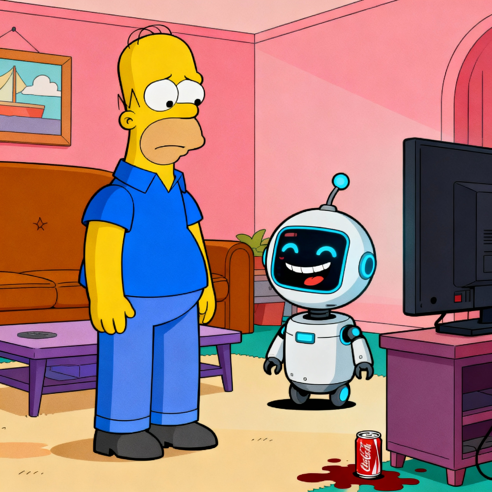
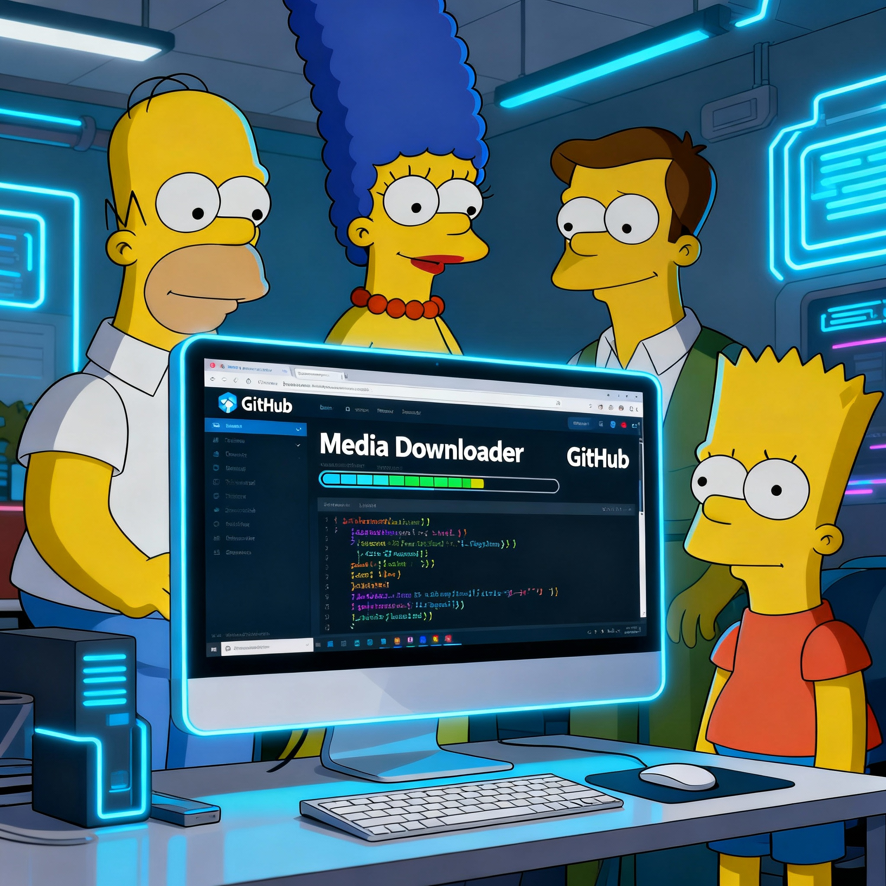
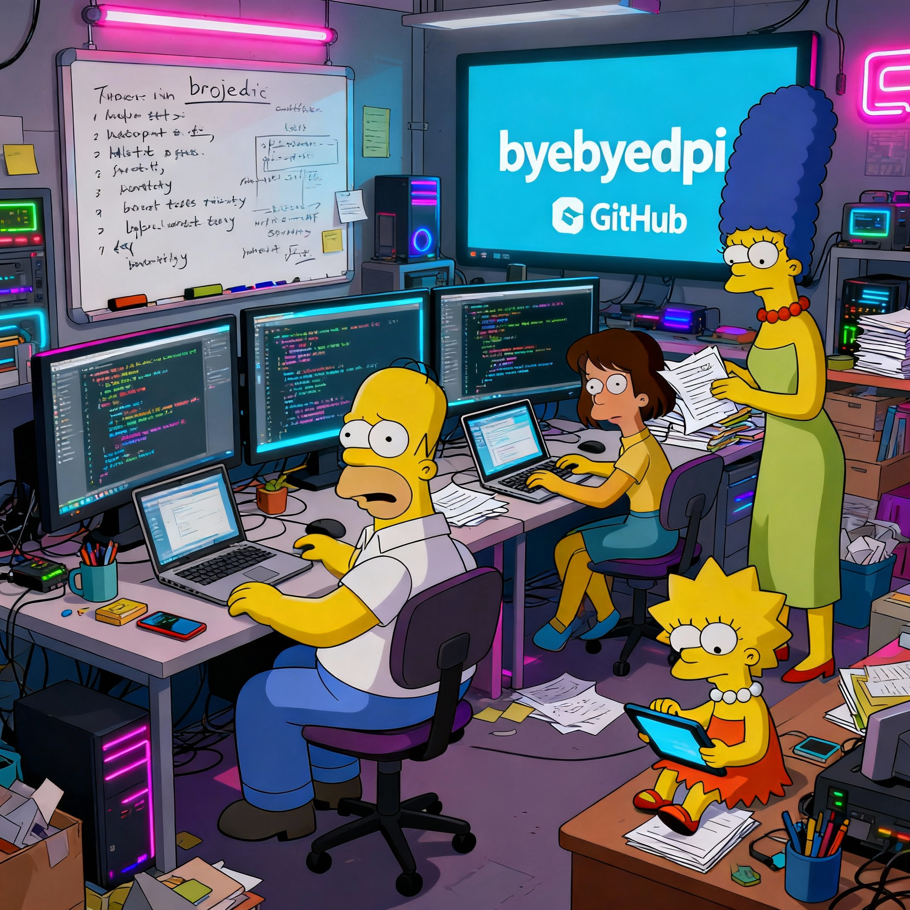

Полезные новостиSome helpful shit |

Этот курс научит вас эффективнее использовать ИИ в работе разработчика. Это не курс по машинному обучению или обучению собственных моделей, а курс для разработчиков, которые пишут софт с помощью ИИ-моделей и инструментов.
>>>Этот курс научит вас эффективнее использовать ИИ в работе разработчика. Это не курс по машинному обучению или обучению собственных моделей, а курс для разработчиков, которые пишут софт с помощью ИИ-моделей и инструментов.
>>>Репозиторий karpathy/nn-zero-to-hero — это бесплатный образовательный курс по нейронным сетям, начинающий с самого базового уровня. Видеолекции размещены на YouTube, а все Jupyter-ноутбуки с примерами кода и упражнениями.
>>>Как же похорошел OPENCODE 😊
Крутая тулза!
GitHub (https://lnkd.in/dAGVTuyH)
docs (https://opencode.ai/docs)
>>>
Mole — это мощный терминальный клинер для macOS, который помогает вам очищать систему от мусора и оптимизировать производительность.
>>>
Media Downloader — это программа с графическим интерфейсом на базе Qt/C++, которая служит фронтендом для популярных консольных утилит загрузки медиа: yt-dlp (по умолчанию), а также youtube-dl, gallery-dl, lux, you-get, svtplay-dl, aria2c, wget и safari books.
>>>
Последнее обновление: март 2026